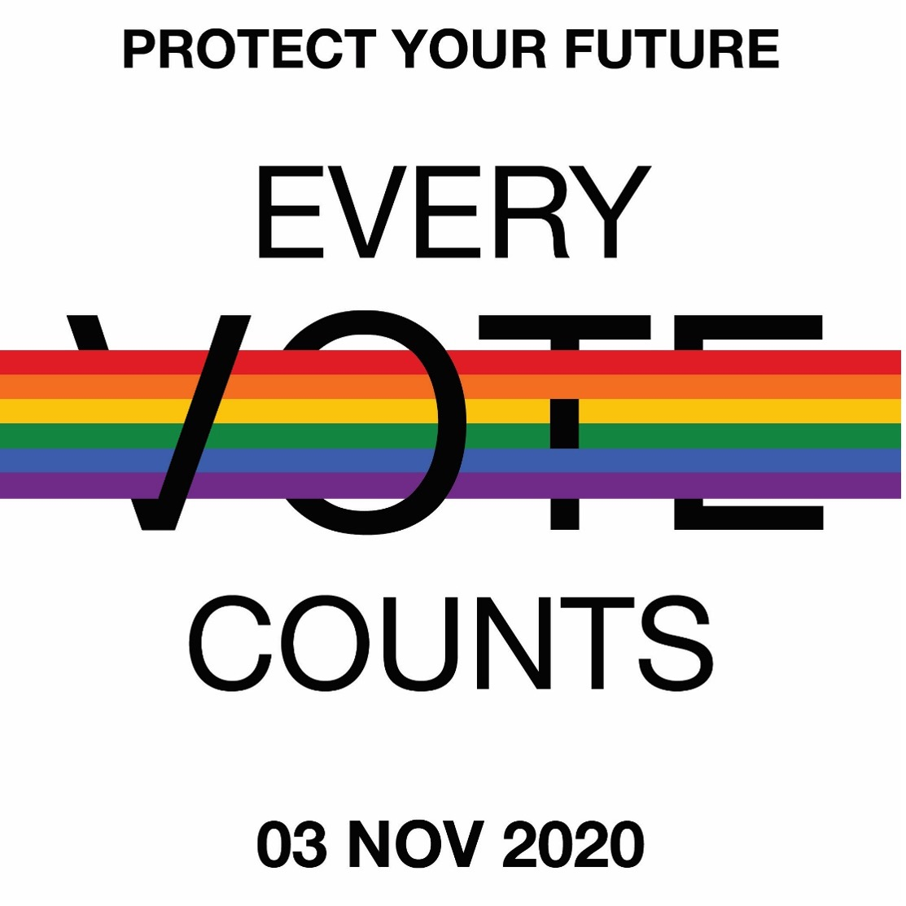
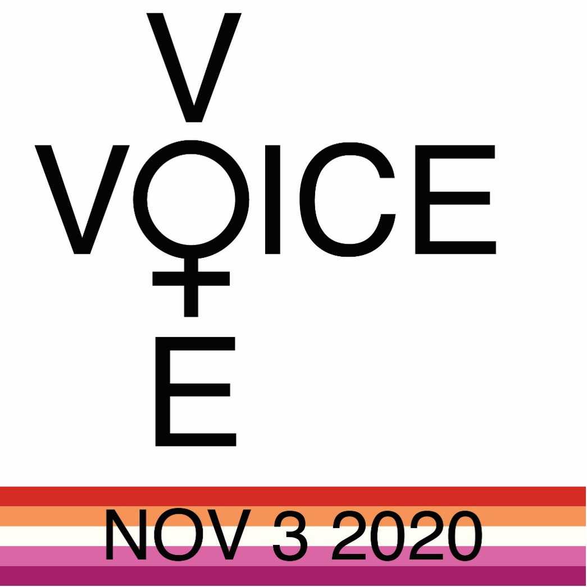

Prints
These are tattoo drawings that channel my type of style
Website Designs
These are different website designs I have created

Digital Designs
This is from the AIGA website. It was a project to create graphics encouraging people to vote.
 